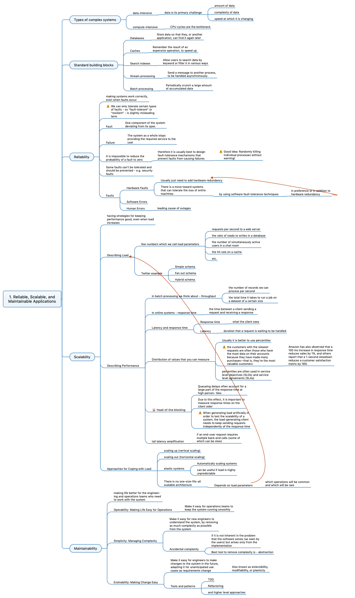

Reliable Scalable Maintainable Systems
Contents
Introduction
As Software/Computer Engineers we are often tasked with building systems that are reliable, scalable and maintainable. But what does that mean? How do we build such systems? What are the trade-offs? How do we decide what to optimize for?
In this series of posts, I will try to answer just that. I will try to break it down into small philosophies and explain them in detail. I will also try to give examples from my own experience, and from the industry.
Data Intensive vs Compute Intensive
Before we start, let’s talk about the two types of systems we can build. Data Intensive and Compute Intensive.
Data Intensive
Data Intensive systems are the ones that deal with a lot of data. They are usually built to solve problems that require a lot of data to be stored, transferred and retrieve. For example:
- Store huge amounts of data, that’s available across systems distributed all over the world, a database.
- Remembers the result of an expensive operation, so reading it again is fast. A cache.
- Allows searching through huge amounts of data, with keywords or filters. A search index.
- Transfer huge amounts of data, from one system to another. A message queue.
All these Data Systems are categorized differently, but they all are very similar, in one way or another, they are dealing with a lot of data.
Compute Intensive
Compute Intensive systems are the ones that deal with a lot of computation. For example, a system that processes images, a system that processes videos, or a system that processes text. These systems are usually built to solve problems that require a lot of computation to be done. For example:
- Machine Learning Models like CNN, RNN etc.
- Gaming and 3D Rendering Engines, like Unity, Unreal etc.
- High-Frequency Trading Systems, like Algo Trading etc.
- Video Encoding and Decoding Systems, like H.264, H.265 etc.
- Cryptography Systems, like Bitcoin etc.
- Web Scraping Systems, like Google Search etc.
- Weather Forecasting Systems.
- Data Mining Systems, like Google Maps etc.
- High-Performance Computing Systems, like Supercomputers etc.
- Engineering Simulations like FEA, CFD etc.
- Computer Vision Systems, like Self Driving Cars etc.
All these Compute Systems are categorized differently, but they all are very similar, in one way or another, they are dealing with a lot of computation.
In this, we focus on optimizing the algorithm and the code, to make it run faster. We also focus on parallelizing the code, to make it run on multiple cores and multiple machines. We also focus on optimizing the hardware, to make it run faster.
Reliable
Reliability is the ability of a system to work correctly under all circumstances. It should
- Handle failures and errors, and recover from them.
- Handle load and stress.
- Prevent any unauthorized access.
- Prevent any data loss or data corruption. Due to hardware failure, software failure, or human errors.
There is a limit to how reliable we can make a system. We can’t make a system 100% reliable. For example, if a meteor hits the earth, and destroys all the data centers, there is nothing we can do about it.
However, let’s say if internet lines connecting Asia with the rest of the world are cut, we can still make our system work. We can have a data backup and services in another region, and we can switch to them.
There are many tests we can perform to check the reliability of a system. For example, we can do load testing, Chaos Moneky testing, and many more.
Let’s see all the failues that can happen, and how we can handle them.
Hardware Failures
Hardware failures are the most common failures that can happen. They can be caused by many things, like
- Power outages.
- Overheating
- Physical damage to SSDs, RAMs, CPUs etc.
- SSDs or Hard Disks have a limited number of read and write cycles, and they can fail after that. MTTF(Mean Time To Failure) is a metric that tells us how long a hardware component will last.
How do we handle them?
- We can have dual or triple power supplies, so if one fails, we can switch to the other.
- We can have cooling systems, so the hardware doesn’t overheat.
- We can have hot-swappable CPUs, RAMs, SSDs etc. So if one fails, we can replace it with another one, without shutting down the system.
- Disks have RAID, which is a way to store data on multiple disks, so if one disk fails, we can still recover the data from the other disks.
This can’t guarantee that the system will never fail, but it will add redundancy to the system, and make it more reliable.
Software Failures
Hardware failures have weak correlations, which means they don’t happen together. If one disk fails, it doesn’t mean the other will fail too. But software failures have strong correlations, which means they happen together. If one service fails, it can cause other services to fail too.
- A runtime process using too much memory, and causing other processes to crash.
- A slow database query, causes other queries to slow down too.
- A service that systems depend on, going down, causing other systems to go down too.
These failures are hard to handle, as they are not predictable. We can’t predict when a service will go down, or when a query will be slow.
How do we handle them?
- We can have a monitoring system, that monitors the health of all the services, and alerts us when something goes wrong.
- Thinking carefully about assumptions and interactions in the system, and making sure they are correct.
- Through testing, we can make sure that the system works correctly, and doesn’t fail.
- Deep understanding of abstracted systems, like databases, caches, message queues etc. So we can use them correctly.
- Process Isolation, so if one process fails, it doesn’t affect other processes.
- Process Restarting.
- Analysis of libraries and frameworks, to make sure they are reliable.
Human Errors
Humans are the most unreliable part of the system. They can make mistakes, and cause the system to fail. We add a lot of complexity to the system, and that makes it hard to understand and maintain, hides bugs and errors, and makes it hard to test.
How do we handle them?
- We can have a good onboarding process, so new people can understand the system easily.
- Well-defined processes, so people know what to do, and what not to do.
- APIs and admin interfaces with well-designed abstractions.
- Decouple the system, so that if one part fails, it doesn’t affect the other parts.
- Test the system, so we can find bugs and errors.
- Telemetry, so we can monitor the system.
